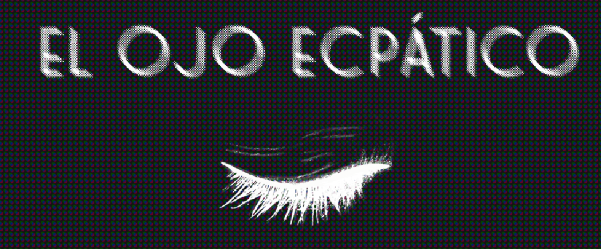
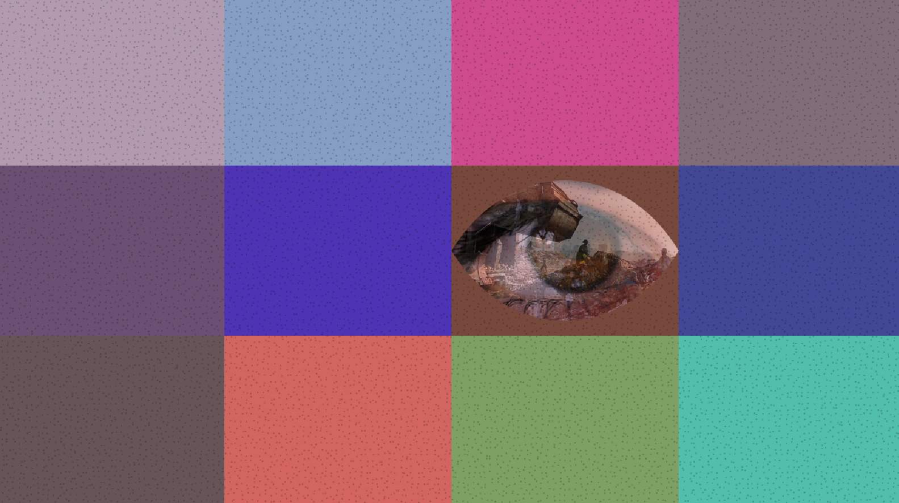
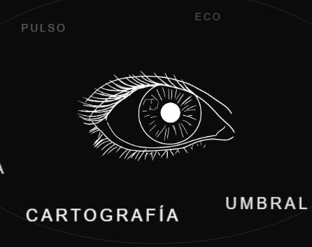
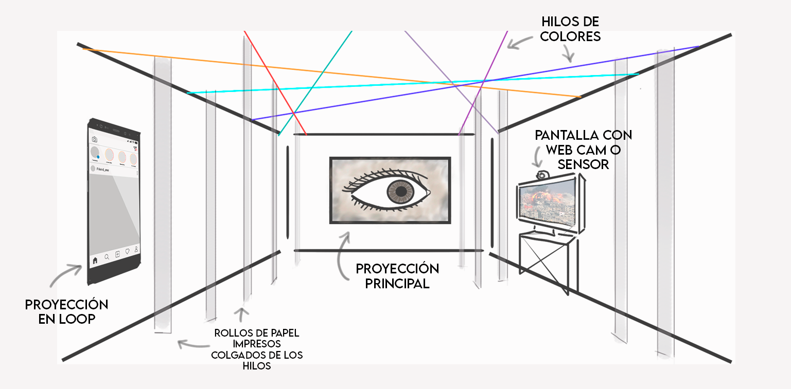
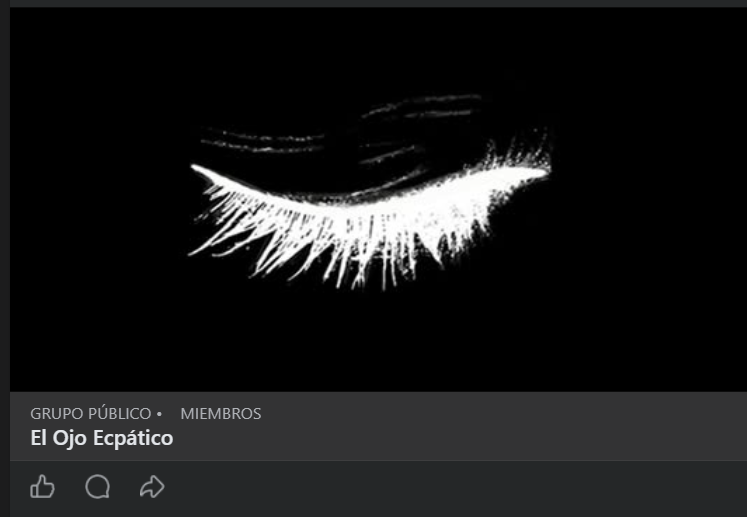

bitacora del proyecto transmedia
El Ojo Ecpatico

Lo que no querés ver...
No deja de existir.
bitacora del proyecto transmedia

Lo que no querés ver...
No deja de existir.
Nos están entrenando para que nada nos importe. Vemos genocidios, pobreza y crueldad extrema en la pantalla, y nuestro único reflejo es deslizar el dedo hacia arriba.
Ahí entra la "ecpatía": un mecanismo de defensa mental para anestesiarnos frente al dolor ajeno y seguir produciendo sin que se nos rompa la cabeza.

Pero la anestesia nos está deshumanizando. Y nos propusimos hacer algo:El Ojo Ecpático Es una forma de parar el scroll y pensar nuestra mirada hacia el mundo, un proyecto transmedia que intenta interrumpir tu parálisis, sacarte de la inercia y obligarte a mirar lo que habitualmente elegís ignorar.
A ver si entendí🤔.
La Ecpatía es un concepto nuevo, un estado entre la Empatía y la Apatía. Un mecanismo que hace que podamos ver el dolor ajeno sin afectarnos por ello, y así, seguir en el engranaje productivo (casi como un robot🤔).
Como diría Marta Franco: Internet nos fue robada por corporaciones tecnológicas que nos explotan 24/7 para extraer la materia prima más valiosa: nuestros datos. Las plataformas fueron diseñadas como entornos tóxicos y adictivos que nos bombardean con un ruido constante. Es agotador.
Acá venimos a hackear el algoritmo de la indiferencia.No nos puede dar igual la crueldad creciente, no podemos mirar de la misma manera un genocidio que un video de gatitos. Queremos seguir siendo humanes, queremos pensar el mundo y queremos hacerlo mejor.
Sólo necesitamos que te permitas algo que antes era automático: Mirar, pensar, sentir, actuar.
¡Formar comunidad con gente esté en la misma!
Vivimos en un mundo multiplataforma, bombardeados por miles de estímulos que hacen que cualquier cosa se pierda en el mar de sobreinformación. ¿Pero que pasa cuando usamos todos esos medios para una misma cosa?
Como diría Scolari, en una red transmedia cada plataforma hace "lo que mejor sabe hacer"para construir sentido global. Nosotres te rodeamos desde todos lados con nuestra obra, para obligarte a parar el scroll y quedarte un poco más con nosotres. Para darte el tiempo que realmente necesitas para ver.

Contra los gigantes tecnocrátas sólo podemos ganar con la guerrilla del arte.
El Ojo Ecpático nació como un videominuto circular. La idea era problematizar la mirada desde un formato redondo. Ahí nació la pregunta: ¿Cuanto podemos sostener la mirada ante el dolor y la crueldad en el mundo?
Pero un videominuto nos quedaba muy corto para semejante pregunta, la idea requería más, mucho más. y explotó en mil pedazos...
Seguro ya entraste a elojoecpatico.com.ar. Sino, no sé que estás esperando. Cómo buena guerrilla tenemos rodeado al ojo ecpático. Queremos orbitar, no dar todo por sentado: La web es parte de la experiencia. Por eso no te vas a encontrar con una web tradicional ni un folleto informativo.
También es el punto de encuentro. Es nuestra base. Desde acá podes ver la extensión del proyecto transmedia, y enterarte de cuando nace un nuevo formato.

La web complementa la experiencia presencial de la instalación y nos lleva a la experiencia virtual.
Antes de enfrentarte a la dolorosa realidad, te traemos un entrenamiento virtual. Programamos una experiencia interactiva en la que te aparecerán imagenes aleatorias bajo diferentes miradas y vos tendras que sostener la mirada (sosteniedno el click del mouse o el dedo en la pantalla),lo suficiente para ver y entender que es cada una.
Es una aproximación virtual interactiva a ese ejercicio que nos ayude a volver a mirar, y conectarnos con lo incomprensible del dolor ajeno.
Es solamente el primer paso, pero mientras más lo sostengas, van a empezar a aparecer respuestas: pero no en la aplicación sino en tu cabeza.
En el mundo digital es fácil escapar. En nuestra instalación física inmersiva, no. Vas a entrar en una experiencia inmersiva, un recorrido oscuro donde sólo vas a ver al ojo ecpático y algo que te va a hacer ruido, mucho ruido.
Habrá algunas pistas que te guien en el recorrido, y cuando te encuentres en el lugar indicado, el dispositivo se activará sólo.

Sólo la verdad puede aliviar eso que te hacía ruido.
Estamos en Instagram, TikTok y Facebook porque ahí es donde la pedagogía de la crueldad circula impunemente.
Tenemos que infiltrarnos en ese terreno para formar comunidades que se encuentren ese esos contextos. Más adelante, pretendemos invitar a migrar al Fediverso, el mundo descentralizado y de código abierto, donde nadie puede controlar el algoritmo.
Nos encontramos por ahora en Instagram, Tik Tok, y facebook
Creamos stickers con nuestro Ojo y un Código QR que te lleva a nuestra web.
Pero hay un truco: están impresos en papel térmico. Con los días, la imagen se va a ir borrando, desgastando, hasta desaparecer. Exactamente igual a lo que hace tu memoria con las tragedias que ves en los noticieros.
Es efímero, pero mientras dure, es un portal. Encontralo. Pegalo. Difundí el virus.
Difundí, pegalos por todos lados!
En la cultura digital de hoy, el artista es un médium, un productor que construye herramientas.
Siguiendo el concepto de "Artivismo Estructural" de David Casacuberta, nosotros solo armamos la estructura tecnológica
Te damos las redes, el código y los proyectores. La obra no es lo que nosotros decimos, la obra es lo que VOS decidís denunciar usando nuestras herramientas'.
La impresion termica se borra con el tiempo. Esa fragilidad sirve: la memoria tambien se gasta si nadie la repasa.
Difundí muchas veces!.
En Facebook (esa red corporativa que habitamos para hackearla) abrimos el grupo "ECO". Es nuestro portal participativo.
Cuando estés navegando y te cruces con algo que te duela, que te indigne, eso que habitualmente ignorarías por "ecpatía"... capturalo. Subilo al grupo. Denuncialo
Todo el material que la comunidad envíe a ese grupo, además de difundirlo en la comunidad, pasa a formar parte de nuestra instalación física. Rompé la apatía. En comunidad podemos hacer más.

El Ojo Ecpatico no puede terminar con la crueldad del mundo, pero intetaremos incomodar y problematizar una forma de mirar que se volvio automatica.
Si el scroll nos entrena para pasar de largo, este proyecto arma una traba.
Podemos inspirarnos en Marta Franco que nos trae la idea de red comun, e en Heinz que nos instiga a construir sin pedir permiso o Scolari que nos motiva a expandir la narrativa transmedia.
Ésta obra toma esos y otros presedentes, para darle forma a una pregunta que no se puede contestar tan facilmente. ¿Cómo sobrevivimos al dolor ajeno sin perder la humanidad? y ¿Que podemos hacer para que la crueldad del mundo no nos paralice?
Un fanzine no está terminado hasta que alguien más le deje su huella. Este espacio es tuyo. ¿Que vas a hacer cuando el algoritmo te vuelva a mostrar lo que pasa? ¿Vas a seguir scrolleando? ¿Vas a mirar para otro lado?
Dejá acá tu comentario, tu bronca, pegá esas palabras que te generamos con este proyecto.